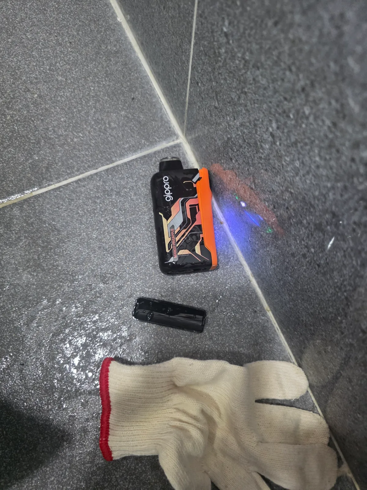
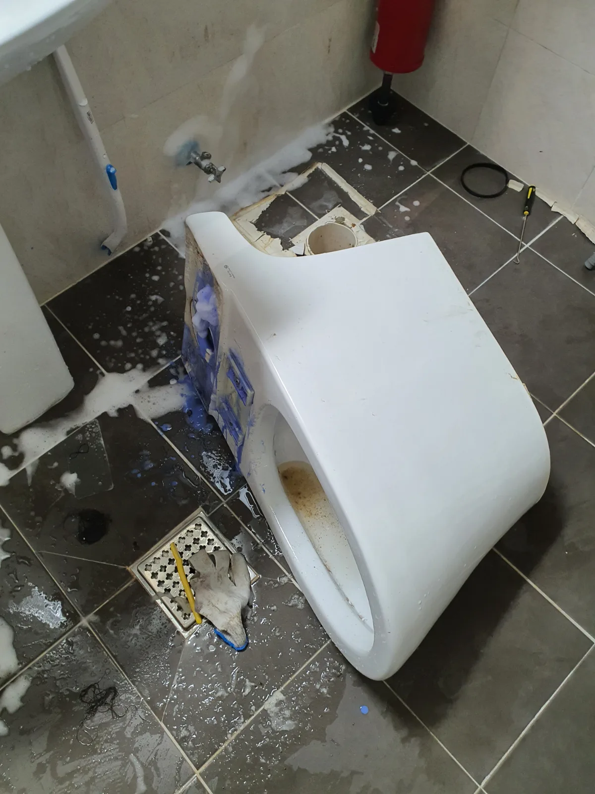
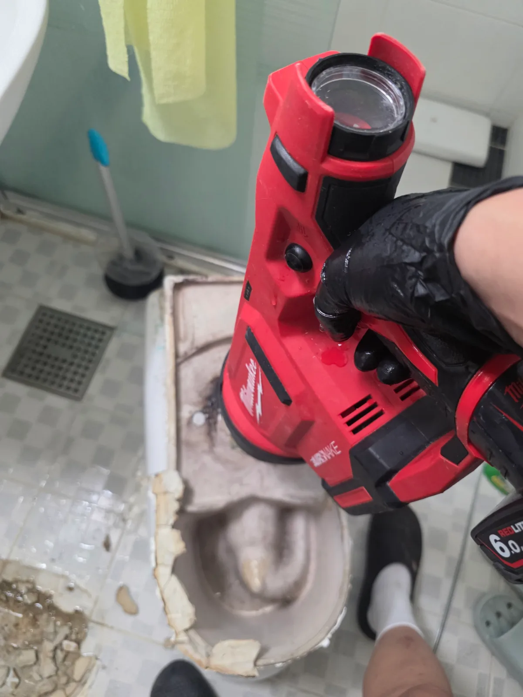
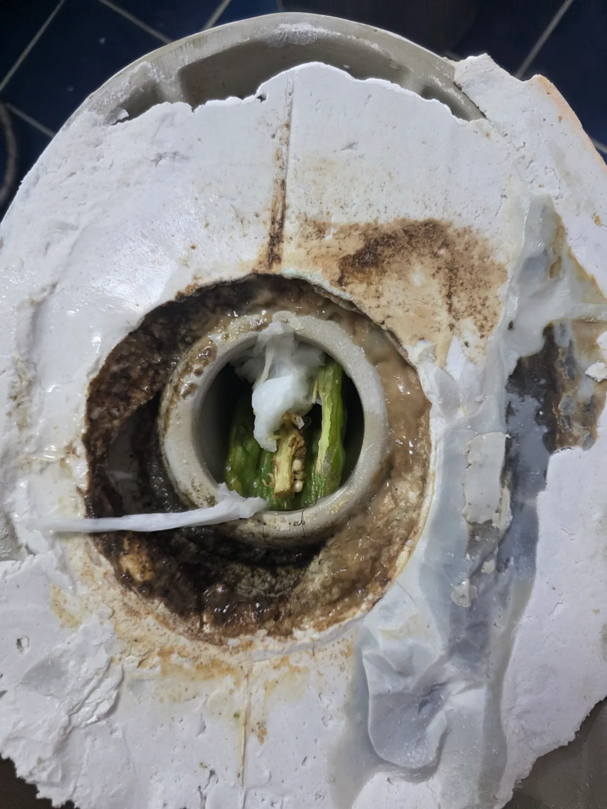
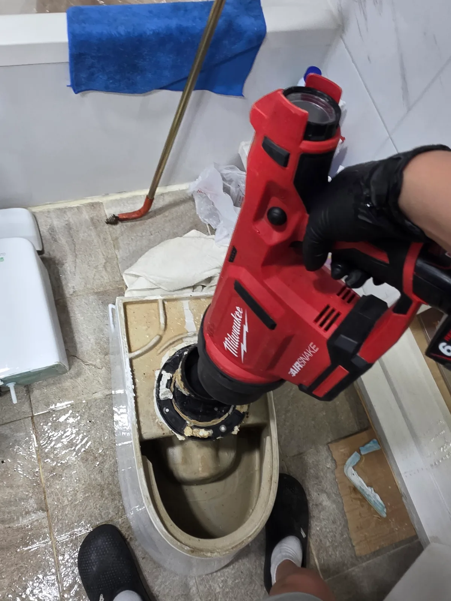
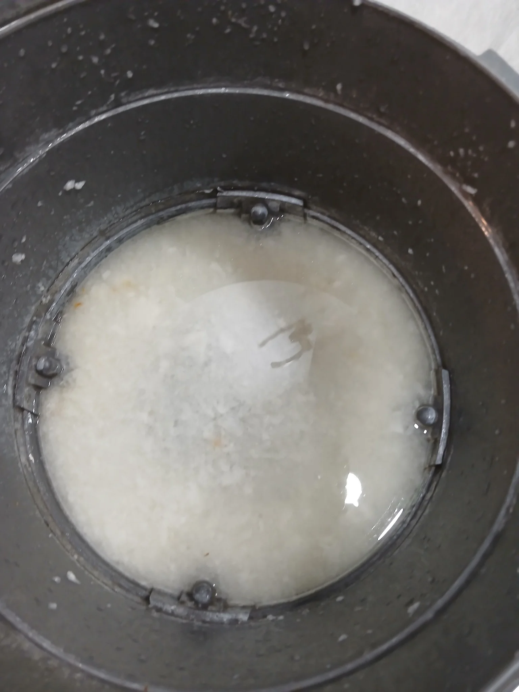
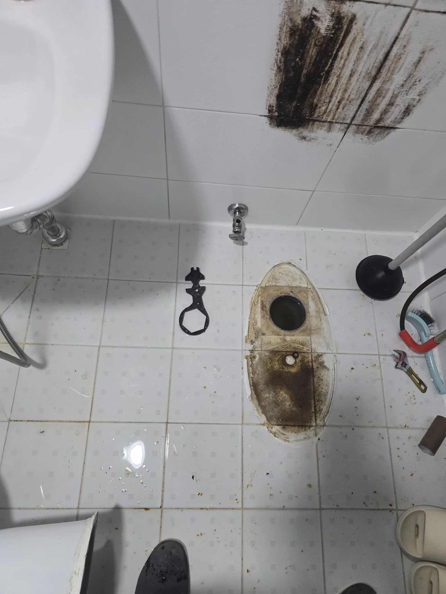
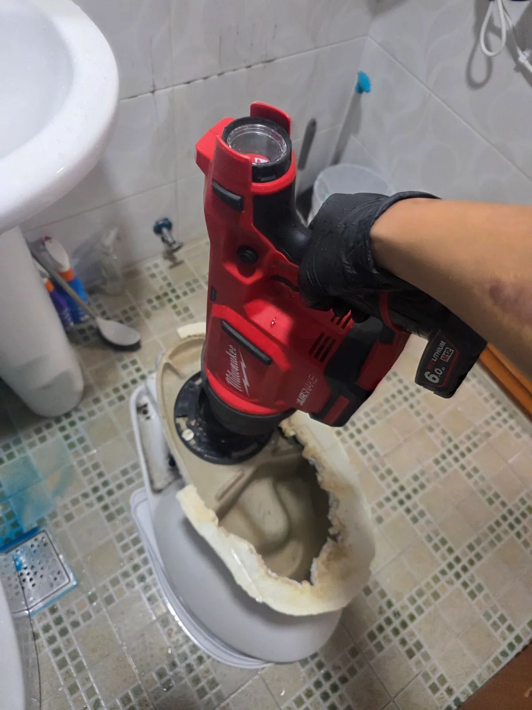

변기막힘 증상은 원인 구간부터 확인합니다
물이 천천히 내려가거나 수위가 차오르는 막힘, 물이 안 내려가는 증상, 이물질 막힘, 반복 막힘, 변기 역류 등 같은 변기막힘 증상이라도 변기·배수구 내부, 연결 배관, 오수관 또는 공용배관처럼 원인이 발생한 위치가 다를 수 있습니다. 신라건축설비는 증상만 보고 작업을 정하지 않고 현장 상태를 확인한 뒤 필요한 작업 범위와 비용 조건을 먼저 안내합니다.
실제 현장에서 확인되는 주요 원인: 물티슈·청소포·음식물·플라스틱 같은 생활 이물질, 변기 트랩 걸림, 하부 오수관 막힘
주요 점검·작업: 석션·에어건·내시경 점검·변기 탈거와 오수관 확인
변기막힘 원인부터 변기뚫는업체 선택까지
변기막힘 원인·변기역류·변기 물 안내려감·변기 이물질·반복되는 변기막힘·변기 탈거·오수관 막힘처럼 검색하는 상황은 표현은 달라도 같은 배수 문제에서 시작되는 경우가 많습니다. 신라건축설비는 단순 관통 여부만 보지 않고 증상, 막힘 위치, 이물질 여부와 배관 상태를 함께 확인해 필요한 작업을 판단합니다.
변기뚫는업체 선택 전 실제 작업사례를 확인하세요
광고 문구만이 아니라 실제로 어떤 증상을 어떤 장비로 진단하고 해결했는지가 중요합니다. 현재 신라건축설비 홈페이지에는 변기막힘 실제 현장사례 53건이 공개되어 있으며 지역, 원인, 작업 과정과 결과를 확인할 수 있습니다.
지역별 변기막힘·변기뚫는업체 실제 출동 기록
최근 변기막힘 해결사례
서초구 서초동 변기막힘 | 탈거 후 마라탕 제거
서초구 서초동 변기막힘 변기를 탈거해 마라탕 재료를 꺼내고 에어건으로 잔여 음식물을 배출한 뒤 재설치 및 통수 확인

강서구 화곡동 변기막힘 | 변기 탈거 후 역방향 에어건으로 전자담배 회수
강서구 화곡동 변기막힘 서울 강서구 화곡동 변기막힘 현장에서 변기를 탈거한 뒤 하부 배출구에서 역방향 에어건 작업을 진행해 내부에 걸려 있던

양주시 덕정동 변기막힘 | 봉수트랩에 끼인 얇은 플라스틱 헤라 변기 탈거로 제거
양주시 덕정동 변기막힘 현장에서 에어건 작업 후 변기를 탈거해 봉수트랩에 세로로 끼어 있던 얇은 플라스틱 헤라를 확인하고 변기 손상을 피하기

구리시 인창동 변기막힘 | 변기 탈거 후 에어건으로 플라스틱 이물질 제거
구리시 인창동 변기막힘 현장에서 고객 요청에 따라 무리한 관통 작업 대신 변기를 탈거하고 에어건 작업으로 플라스틱 용기형 이물질을 회수한

광명시 광명동 변기막힘 | 변기 탈거하니 채소와 휴지가 막고 있었습니다
광명시 광명동 변기막힘 현장에서 변기를 탈거해 확인한 결과 하부 통로에 채소류와 휴지가 걸려 있었고 이물질 제거와 에어건 작업 후 변기를

강남구 역삼동 변기막힘 | 관통기로 안 뚫린 이유 석션으로 야채류 이물질 제거
강남구 역삼동 변기막힘 현장에서 관통기를 먼저 사용했지만 막힘이 해소되지 않아 석션 작업으로 전환했고 변기 내부에 남아 있던 다량의 야채류

광진구 구의동 변기막힘 | 화장품 뚜껑과 휴지뭉치 탈거 후 역방향 제거
광진구 구의동 변기막힘 관통기와 석션으로 해결되지 않은 구의동 아파트 변기막힘 현장에서 변기를 탈거했습니다 아래쪽 배출구에서 역방향으로 에어건을

강남구 대치동 변기막힘 | 빌딩 화장실 반복 관통 후 석션으로 탈거 없이 해결
강남구 대치동 변기막힘 빌딩 화장실에서 변기 내부에 단단히 뭉친 이물질로 발생한 막힘을 해결했습니다 관통 작업을 반복해 막힌 부분을 충분히

송파구 잠실동 변기막힘 | 휴지죽 석션 후 탈거 에어건으로 해결
송파구 잠실동 변기막힘 현장에서 석션으로 휴지죽을 다량 회수했지만 막힘이 남아 변기를 탈거한 뒤 에어건 작업으로 해결했습니다

서초구 서초동 변기막힘 | 변기 탈거 후 오수관 음식물 회수
서초구 서초동 변기막힘 현장에서 변기를 탈거한 뒤 오수관에 막힌 음식물을 석션으로 회수하고 분리한 변기 내부는 에어건으로 작업했습니다

강남구 역삼동 변기막힘 | 서울 강남구 역삼동 오피스텔 변기막힘 하부에 걸린 닭다리
강남구 역삼동 변기막힘 석션과 관통기로 해결되지 않던 변기를 탈거해 하부 연결부에 걸린 닭다리와 닭날개를 발견했습니다 이물질을 직접 꺼내고

광주시 송정동 변기막힘 | 경기도 광주시 송정동 변기막힘 휴지 속 실리콘 덩어리
광주시 송정동 변기막힘 변기 내부에 걸린 휴지 뭉치와 실리콘 덩어리를 탈거 후 에어건 작업으로 제거하고 변기 재설치와 바닥 접합부 마감까지
서울·경기·인천 변기막힘 출동
서울 37건 · 경기 15건 · 인천 1건의 실제 기록을 기반으로 지역별 사례를 연결합니다. 새로운 현장사례가 등록되면 해당 서비스와 지역 허브에 함께 누적됩니다.